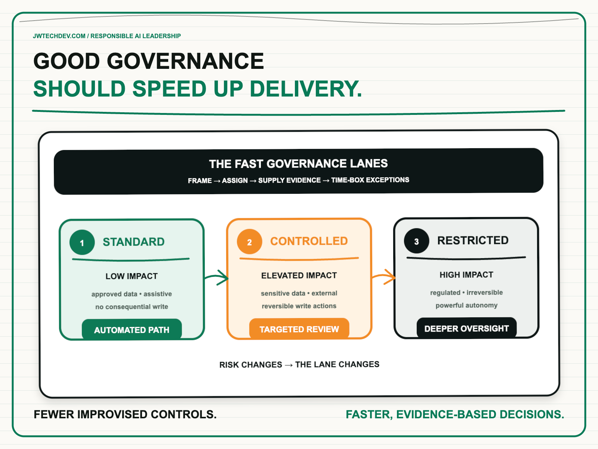

Good AI governance should make delivery faster.
Governance fails when every AI use case enters the same queue, creates a new committee, and waits for controls to be invented from scratch. A strong system classifies risk early, routes work to a known path, collects evidence automatically, and reserves human judgment for consequential decisions.

Quick answer
Good AI governance should reduce uncertainty before a team invests heavily. It should tell builders which data, models, tools, evaluations, approvals, and monitoring patterns are already acceptable for a defined risk tier. The result is fewer late surprises, less duplicate review, and a shorter path from idea to controlled production use.
I use the FAST Governance Lanes: frame the use case, assign a risk lane, supply reusable evidence, and time-box exceptions. Standard work moves through automated paved paths. Controlled work receives targeted review. Restricted work gets deeper oversight because the consequences justify it.
Slow governance is usually an operating-model problem
Most teams do not object to responsible AI. They object to uncertainty. They do not know who can approve a workflow, what evidence is sufficient, whether the policy will change during review, or why a low-impact internal assistant is following the same process as an agent that can modify customer records.
That uncertainty creates two bad behaviors. Builders either wait for a central group to interpret every decision, or they avoid the process until the end and present governance teams with a nearly finished system. The first path creates a bottleneck. The second creates redesign, conflict, and risk.
NIST's AI Risk Management Framework treats governance as a cross-cutting function that informs mapping, measurement, and management throughout the lifecycle. It also calls for risk activity to match organizational tolerance and for roles, responsibilities, inventories, and monitoring to be clear. That is a design for repeatability, not a demand that every use case receive identical treatment.
AWS makes the delivery implication explicit in its Path-to-Value framework: organizations that operationalize responsible AI early can accelerate approvals. Amazon Bedrock Guardrails also illustrates the platform pattern. Teams can define reusable policies for content, denied topics, sensitive information, and other safeguards, then apply and test them consistently instead of rebuilding controls inside every application.
The FAST Governance Lanes
F: Frame the decision. Start with the user, intended outcome, data, model, tools, autonomy, audience, and consequence of failure. Distinguish an assistant that drafts internal text from an agent that can approve a refund, change infrastructure, or make an employment recommendation. Governance cannot be proportional until the work is described in operational terms.
A: Assign a risk lane. Use a small number of transparent criteria: data sensitivity, external exposure, write authority, reversibility, regulated impact, human oversight, and potential harm. The lane determines required controls and evidence. Teams should know the likely path during discovery, not after development.
S: Supply reusable evidence. Build evidence into templates and pipelines: owner, purpose, data classification, model and prompt version, evaluation results, guardrail tests, identity policy, tool permissions, cost limit, human approval, monitoring, rollback, and incident contact. Pre-approved architectures, policy-as-code, evaluation suites, and standard dashboards should satisfy recurring requirements automatically.
T: Time-box exceptions. Novel systems will not fit every paved path. Give each exception one accountable decision owner, a response deadline, the missing evidence, and an expiration date for accepted risk. An exception queue without service levels is simply a hidden backlog.
Route work through three delivery lanes
Standard lane. Use this for low-impact, assistive workflows with approved data, no consequential write action, clear human review, and established platform patterns. The team completes a lightweight registration, runs automated checks, and deploys through the paved path. Governance is mostly encoded in the platform.
Controlled lane. Use this when the system touches sensitive data, serves external users, makes reversible changes, or uses tools with meaningful business impact. Require targeted security and domain review, scenario-based evaluations, explicit approval boundaries, stronger monitoring, and a limited launch. Review focuses on the elevated risks instead of reopening every standard control.
Restricted lane. Use this for regulated or high-impact decisions, irreversible actions, powerful autonomous workflows, or risks the organization is not prepared to absorb. Require executive risk ownership, independent testing where appropriate, formal legal and compliance input, human authorization, containment controls, and staged evidence before scale. Some ideas should remain experiments or be stopped.
The lanes should not become permanent labels. A controlled workflow can move toward the standard lane when the organization turns repeated review findings into tested platform controls. A standard workflow should move up when its data, audience, authority, or impact changes. Governance is a routing system with feedback, not a one-time certificate.
What to do next Monday
- Inventory five active AI use cases. Capture user, data, model, tools, autonomy, audience, and failure consequence in one page.
- Define seven routing questions. Cover sensitive data, external exposure, write authority, reversibility, regulated impact, human review, and potential harm.
- Assign each use case to a lane. Document why it belongs there and who owns the decision.
- Publish the evidence contract for each lane. Builders should know what “ready” means before they build.
- Automate one repeated control. Start with an identity check, guardrail test, evaluation threshold, deployment gate, or trace-completeness check.
- Set service levels for review and exceptions. Track response time, rework, exception age, and reasons for escalation.
- Review the system monthly. Move proven controls into paved paths and retire requirements that no longer reduce meaningful risk.
The goal is not fewer controls. It is fewer improvised controls, fewer ambiguous owners, and fewer decisions discovered at the end. Governance earns trust when teams can predict the path and leaders can see the evidence.
I will be at AFROTECH in Houston November 2-6. If you are building an enterprise AI platform, global delivery organization, or technical go-to-market motion, I would be glad to compare notes.
Sources checked
Turn governance into a delivery system
Explore more practical frameworks for enterprise AI, cloud architecture, governance, and technical leadership.
Get the free starter kit